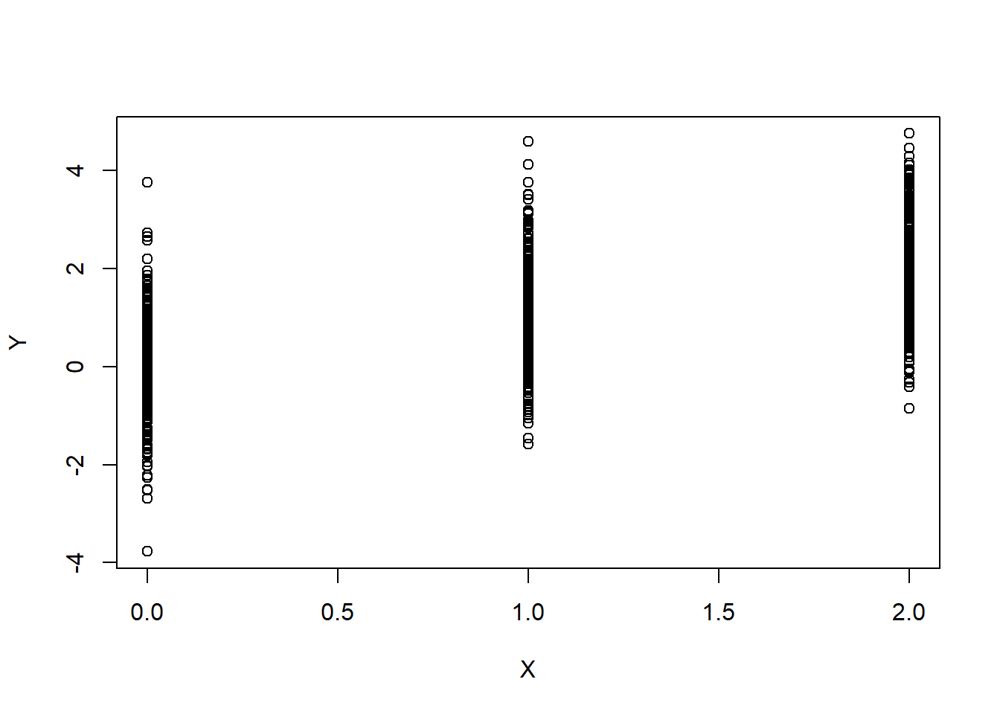
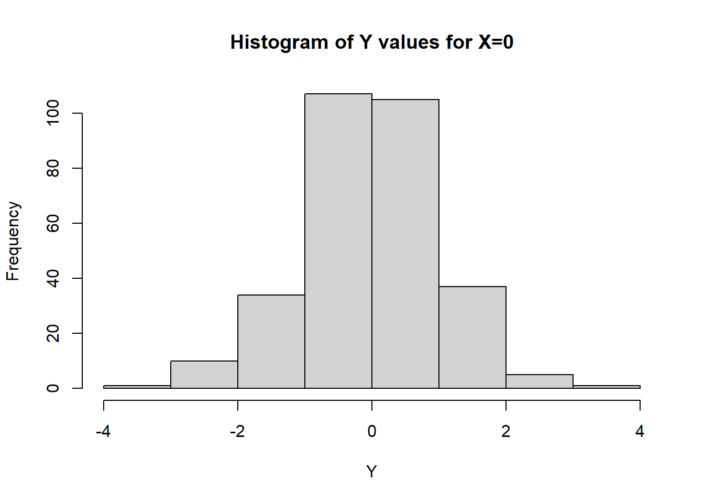
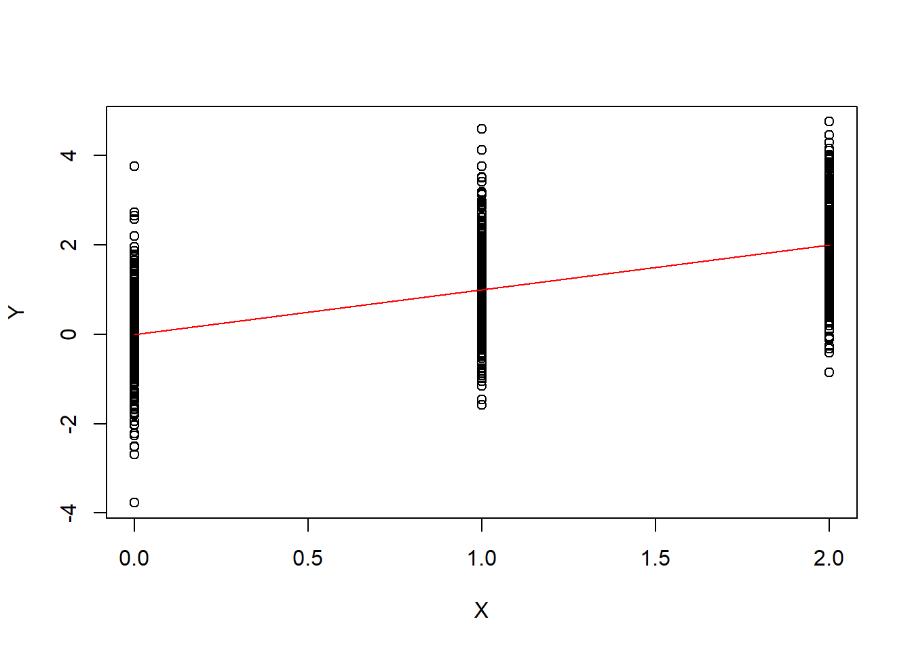
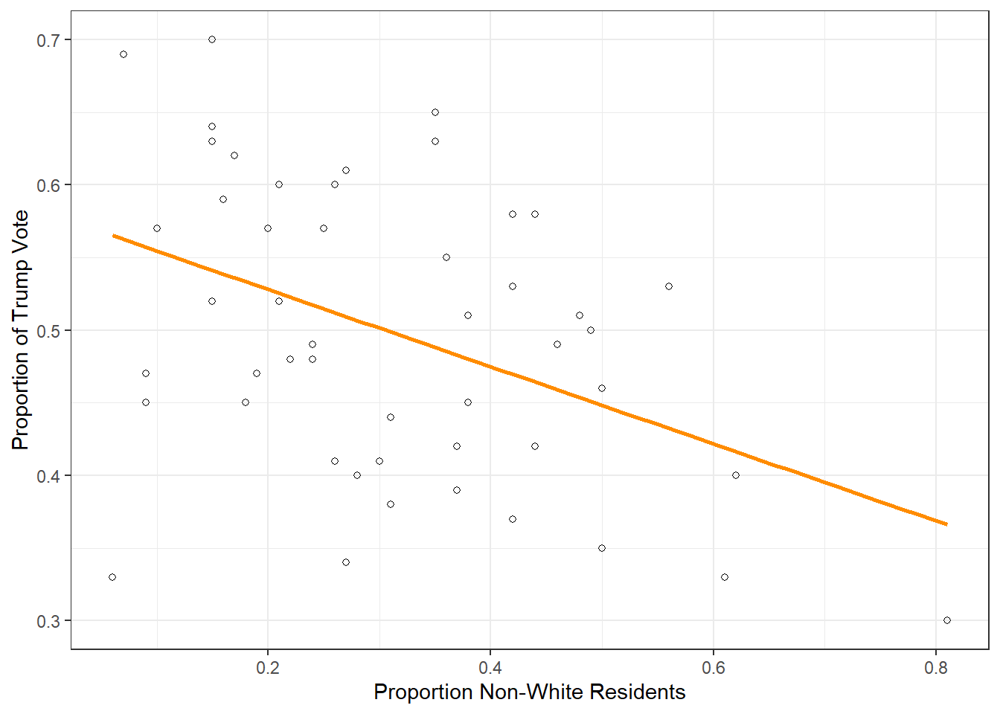

A deterministic model for prediction is a function \[
Y = f(X_1,X_2,..X_p)
\] where \(Y\) is called the outcome or response variable, \(X_1,...,X_p\) are called the features or predictors, and \(f\) is a function which relates the two. A statistical or probabilistic model allows us to add some random noise into the model and say \[
Y = f(X_1,X_2,..X_p) + \varepsilon
\] where \(\varepsilon\) is a random variable with mean zero (so the noise acts in an unbiased manner) and nonzero variance \(\sigma\). In this framework, the function \(f\) represents the trend and the error term \(\varepsilon\) represents random fluctuations in the outcome that are not captured by your features. Because of Central Limit Theorem arguments, we often assume that \(\varepsilon\) is a Normal random variable.
To demonstrate, here is an example of data that is generated according to the statistical model \[
Y = X + Z
\] where \(Z\) is a standard normal random variable and \(X\) can be either 0, 1, or 2:
set.seed(45) # Sets random number generator seed for reproducibility. X=rep(c(0,1,2),300) # Generates 300 copies of the list 0,1,2n=length(X) # Could set n = 900 but this is better in case we change XY=X+rnorm(n) # Adds random noiseplot(X,Y) # R basic plotting function

Notice that for each possible value of \(X=x\), the corresponding \(Y\) values are normally distributed around \(x\). For example, here are all \(Y\) values corresponding to \(X=0\).
hist(Y[X==0],main="Histogram of Y values for X=0",xlab="Y")

This is what we call fake data. We started with a mathematical model and used it to create observations. Its cheating, but sometimes necessary to pull back the mathematical curtain and get some intuition. In the real world, the opposite happens: we get data and need to guess the model. Assuming we have a single feature \(X\) and outcome \(Y\), then data means collecting \(n\) pairs of points \((x_i,y_i)\), \(i=1,2...,n\), where each \(x_i\) is a measurement of the feature and \(y_i\) is a corresponding measurement on the outcome. In our fake data, this would be all 900 pairs of X,Y values. For example, the first is
c(X[1],Y[1])
[1] 0.0000000 0.3407997
The goal is then to find a predicted trend function \(\hat{f}\) (yes, we like to put hats on things in statistics and it always means something that is predicted) so that the predicted values \[
\hat{y}_i = \hat{f}(x_i)
\] are as close to the collected \(y_i\) as possible. If the outcome variable \(y_i\) is numeric, we call the process of finding a suitable \(\hat{f}\) a regression problem. If the outcome \(y_i\) is categorical, we call it a classification problem. It is also often of interest to find an estimate \(\hat{\sigma}\) for the standard deviation of the noise so we can form confidence or prediction intervals but more on that to come.
Suppose now that we did not know the original model that had been used to generate the \(X\) and \(Y\) values above. How would we go about developing a model of the form \[
Y = f(X) + \varepsilon ?
\] Well, since we assumed that \(\varepsilon\) has mean zero, the trend function \(f(X)\) should capture how the mean of \(Y\) depends on the values of \(X\). From the scatterplot above, it looks like the mean of Y increases as X increases in a linear fashion so we might guess \[
f(X) \approx m X + b
\]
In fact, we could compute the mean of Y for each value of X as follows1 to estimate \(m,b\):
c(mean(Y[X==0]),mean(Y[X==1]),mean(Y[X==2]))
[1] -0.04163491 1.02615796 1.96376055
Here it looks like the mean of Y is roughly 0 when X is 0 and goes up by about 1 for each increase of 1 in X. This would suggest that for any value of \(X = 0,1,2\), \[
f(X) \approx X.
\] To estimate the standard deviation of the noise, we can also compute the standard deviation for each X value
c(sd(Y[X==0]),sd(Y[X==1]),sd(Y[X==2]))
[1] 1.026344 1.047840 1.023557
They are all pretty close to 1 so we might estimate \(\hat{\sigma} \approx 1\). Of course, we know that this model is accurate because this was fake data.
As mentioned above, once you have an estimate of the model, you can use the trend function to calculate predictions. \[
\hat{y} = \hat{f}(x)
\]
In our fake example, \(\hat{f}(x) = x\) so our predictions would just be \[
\hat{y} = x
\] for \(x=0,1,2\). Notice that these predictions will be far from perfect since the actual \(y_i\) values are randomly distributed around \(x_i\). Instead think of \(\hat{y}\) as capturing the expected value of \(Y\) for a given value of \(X=x\). Here is what it looks like plotted alongside our original data
plot(X,Y)lines(X,X,col='red')

We’ll close out our Day 1 notes with a real life example to further demonstrate these concepts.
Predicting Election Results
The dataset election2016.csv in the shared folder contains the results of the 2016 presidential election by state along with key demographic information (Source: FiveThirtyEight). You can load it into Rstudio and look at the first few rows using the following commands which pull the dataset from the course github repository:
state median.income unemployed metro high.school non.citizen white.pov
1 Alabama 42278 0.060 0.64 0.821 0.02 0.12
2 Alaska 67629 0.064 0.63 0.914 0.04 0.06
3 Arizona 49254 0.063 0.90 0.842 0.10 0.09
4 Arkansas 44922 0.052 0.69 0.824 0.04 0.12
5 California 60487 0.059 0.97 0.806 0.13 0.09
6 Colorado 60940 0.040 0.80 0.893 0.06 0.07
income.ineq non.white trump.vote outcome
1 0.472 0.35 0.63 Red
2 0.422 0.42 0.53 Red
3 0.455 0.49 0.50 Red
4 0.458 0.26 0.60 Red
5 0.471 0.61 0.33 Blue
6 0.457 0.31 0.44 Blue
If we wanted to predict the outcome of the election, we have two choices
Try to predict the actual proportion of Trump vote (trump.vote)
Try to predict whether the state was red (for Trump) or blue (for Clinton) (outcome)
The first would be a regression problem and the second classification. We’ll start with the first and choose the single predictor non.white (the proportion of non-white residents of the state) to use in our preliminary analysis.
The most common package we will use in this course is tidyverse. If you haven’t already, install it with the command install.packages('tidyverse'). Then get in the habit of loading it to start each session with the following command.
library(tidyverse)
The tidyverse package contains ggplot2, the premier plotting package2 in R and dare I say any data science software? The following creates a scatterplot of trump.vote vs non.white
ggplot(election2016,aes(x=non.white,y=trump.vote))+geom_point(shape=1)+labs(x="Proportion Non-White Residents",y="Proportion of Trump Vote")+geom_smooth(method="lm",se=FALSE,col="darkorange")+theme_bw()

The geom_smooth command adds the “trendline” which has a negative slope in this example and seems to capture the overall “flow” of data. This suggests we might fit a model of the form \[
Y = \beta_0 + \beta_1 X + \varepsilon
\] where \(Y\) = trump.vote, \(X\) = non.white, and \(\varepsilon\) is the random noise. In this case, \[
f(X)= \beta_0 + \beta_1 X
\] is a linear function3 and so estimating it is equivalent to estimating the two parameters \(\beta_0, \beta_1\) with some \(\hat{\beta}_0, \hat{\beta}_1\). The predicted outcomes would then be \[
\hat{y}_i = \hat{\beta}_0 + \hat{\beta}_1 x_i
\] For example, if we look at the line in the graph above, it looks like it has a slope of about \(-0.05/0.2 = -0.25\) and an intercept of around 0.57 so we might guess \[
\hat{\beta}_0 =0.57, \, \hat{\beta}_1 = -0.25
\] Then the actual and predicted values would be as follows
The Sum of Squared Errors (SSE) of a model is (as it sounds) the sum of squared errors made by replacing the outcome values \(y_i\) with their predictions \[
SSE = \sum_{i=1}^n (y_i- \hat{y}_i)^2
\] We can compute SSE for our model as follows
sse=sum((y-yhat)^2)cat("SSE = ", sse)
SSE = 0.4116437
If someone chooses a different \(\hat{f}\) that gives predictions with a better SSE, they can claim a better model. But wait a minute, instead of just guessing, can’t we start with our goal of minimizing SSE and find the coefficients which make it as small as possible? In other words, we should think of the SSE as a function of \(\beta_0, \beta_1\) (different lines gives a different error) and try to minimize the “loss” function4): \[
\ell(\beta_0,\beta_1) = SSE = \sum_{i=1}^n (y_i - (\beta_0 + \beta_1 x_i))^2
\]
Minimize means choosing estimates \(\hat{\beta}_0,\hat{\beta}_1\) to make this quantity as small as possible. This becomes a calculus or linear algebra problem5 and solving it gives the least squares estimates of \(\beta_0, \beta_1\). The R function lm will compute them by
lm(y~x)
Call:
lm(formula = y ~ x)
Coefficients:
(Intercept) x
0.5811 -0.2655
The number under “Intercept” is the estimate \(\hat \beta_0\) and the number under \(x\) is \(\hat \beta_1\).
Before we show this is better than our eyeball model, a note on R syntax. The part of the above command \[
y \sim x
\]
is called a model formula. It means that we are going to be using the variable y as our outcome and variable x as a feature. If you place a function \(f\) around a model formula, then what you are doing is fitting a model \[
Y = f(X) + \varepsilon
\] based on our data. The “lm” stands for linear model which means \(f(x) = \beta_0 + \beta_1 x\) is the trend function being used in this example, but we will replace lm with more complicated functions as the course goes on.
Now let’s check that our model is better than the eyeball one
yhat_lm=0.5811-0.2655*xsse_lm=sum((y-yhat_lm)^2)cat("SSE eyeball =",sse," Best SSE = ", sse_lm)
SSE eyeball = 0.4116437 Best SSE = 0.409327
Just a little bit smaller!
Assessing Model Fit
The mathematician George Box once said that “all models are wrong, some models are useful.” The goal of statistical modeling is not a perfect description of real world phenomena but rather a helpful approximation that is “good enough” for the purpose at hand. Once we have fit a model \(\hat y = \hat f (x)\) to a dataset, there are two types of questions we want to ask:
Does the model yield accurate predictions for new observations?
Does the model allow us to infer generalizable relationships between variables?
These two types of questions fall under the categories of prediction and inference, respectively. The latter is the classical domain of mathematical statistics and probably what you are more familiar with if you’ve taken an introduction to statistics course (confidence intervals and hypothesis testing fall under this category). The former is of more concern in the age of machine learning where we often don’t care as much about how our model makes predictions (although maybe we should) so much as the strength of such predictions. The next two sections will delve more into each topic with respect to the linear model considered in this section. If you want to dig even deeper, the Module 1 Theory supplement covers the mathematics behind least squares estimation (calculus background recommended), and the Module 1 R Tools supplement is a helpful primer if you are new to R or ggplot2.
Practice
Choose another numeric variable from the election2016 dataset. You can get a quick glimpse of the options using glimpse: